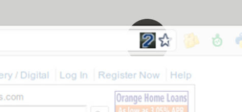

Jeter Filter
Remove Derek Jeter from your Internet
Features
Remove Derek Jeter
Jeter Filter quickly and carefully scours the Internet for signs of Derek Jeter and removes him while you browse, making Jeter disappear...
right before your very eyes.
Forewarned is Forearmed
Get a visual notification when Derek Jeter might be on the webpage you are viewing. If the Jeter Filters search patterns are tripped, your address bar gets a subtle warning icon, serving as a cue you should navigate away immediately.
Set Your Own Jeter Threshold
Set the Jeter Filter to the amount of Jeter you feel your psyche can handle.
Make The World A Better Place
Jeter Filter anonymously reports each webpage found to contain Derek Jeter to the awesome open metadata service FluidInfo. This means the more you use the Jeter Filter, the easier you make it for other developers worldwide to filter Jeter from their apps.
In short, the more Jeter you filter, the easier it is to filter more Jeter!
About
About The Extension
Jeter Filter was conceived in the wee hours of the hackNY Spring Hackathon and eventually coded over a series of Red Sox games in June 2011. The Red Sox winning percentage at the beginning of the project was .439 and was .611 at time of 1.0 release. Sam Adams was primarily consumed during initial coding, followed by Templeton Rye during skinning and/or during Red Sox losses. Jeter Filter is released under GPLv3 with source code available at GitHub.
Images and likenesses contained in the extension and accompanying website are used as distorted imitations in exercise of fair use for parody.
About The Developer

Rob Spectre is an Internet mathemagician creating pure Internet rocketsauce for the past two dot com busts.
In addition to Jeter Filter, he is a contributor to a few open source projects, a hacker for Boxee and the creator of many other fine Internet diversions including the heartwarming FML clone how i knew you were the one, the robotic telephonic comedy service Laugh-o-Tron and the graffiti photo tumblog Brooklyn Vandal.
Living in Brooklyn, New York, Rob bats right, throws right and hates the fucking Yankees.
Contact
- Email: rob [dot] spectre [at] gmail
- Twitter: @dN0t
- Facebook: RobSpectre
- Web: snacky
Photo by Elana Roth.